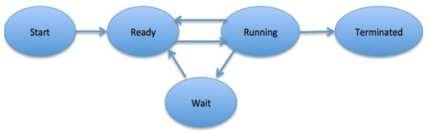
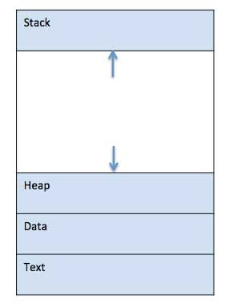
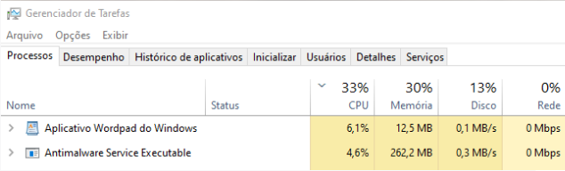
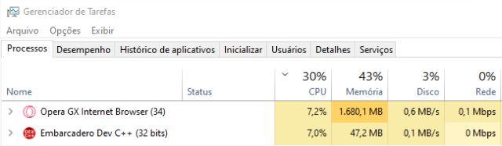

◉ Gerência de processos
Neste artigo iremos explicar o que são processos em um sistema operacional, tal qual sua ordem de execução e
exemplos de uso dos processos no cotidiano. O processo necessita da organização do sistema operacional para que
funcione com o melhor desempenho e maior eficiência para o uso do próprio usuário ou empresa.
◉ O QUE É UM PROCESSO?
Um processo é um programa em execução, que pode ser referenciado como “task”, a tarefa normalmente é dividida
por uma thread, para que mais tarefas sejam executadas simultaneamente nos olhos do usuário, pois no sistema,
as tarefas não podem. Por exemplo, em um jogo, onde uma thread esteja encarregada da imagem e a outra do áudio,
é a melhor maneira de rodá-lo sem nenhum stuttering ou travamento.
A execução de qualquer tarefa deve funcionar em uma ordem que é determinada pelo próprio sistema operacional.
➤ MULTITASKING E GERENCIAMENTO DE PROCESSOS
Um sistema operacional em multitasking troca de processos para que tenha a aparência de que diversos processos
estejam sendo executados de maneira simultânea, porém apenas um por vez pode ser executado pela CPU, como dito
acima. A não ser que a CPU tenha um multithreading, onde cada thread pode ser usada para uma parte do sistema
operacional, por exemplo, uma thread sendo usada para um navegador e outra para um aplicativo de chamadas.
O processador, em qualquer instante, pode executar apenas uma instrução de um programa, mas vários processos
podem ser sustentados por um período de tempo.
Ciclo de vida do processo
Um processo tem um ciclo de vida, bem exemplificado na imagem a seguir:

Primeiro temos o estado inicial, quando o processo é criado ou iniciado.
Após o primeiro estado, o processo entra em uma ordem de prioridade para ser atribuído ao processador. Processos
prontos estão esperando para ter o processador com um espaço alocado pelo sistema operacional para então
rodar. O mesmo pode entrar nesse estado após o Início, ou enquanto roda, sendo interrompido pelo organizador
do sistema operacional por outro processo a caminho.
Assim que o processo é atribuído ao processador ele entra no estado de funcionamento completo, executa o programa
da maneira instruída.
Entra em modo de espera caso esteja carregando um recurso, uma entrada do usuário ou um para que um arquivo
fique disponível.
Depois de executado, o processo é finalizado pelo sistema operacional, onde é levado para o estado de terminação
para que seja removido da memória principal.
Quando um programa é carregado para a memória e se torna um processo, pode-se dividi-lo em 4 seções, Stack,
Heap, Text e Data.
◉ STACK, HEAP, TEXT, DATA
Mas o que são Stack, Heap, Text e Data?
O stack é uma estrutura de dados LIFO (Last in First Out). Traduzindo, isso significa "Último a entrar e primeiro
ao sair”. Podemos fazer uma analogia a isso pensando em uma pilha de pratos, por exemplo. O último prato que
você coloca é o primeiro que você tirar para lavar.
Um segmento de stack é utilizado para armazenar todos os dados/variáveis locais. Quando uma função é chamada,
essas variáveis e os parâmetros são adicionados ao stack, e quando essa função termina de executar, o stack
desempilha e remove essas variáveis da memória e permite que a execução do programa continue normalmente. Por
conta desse “empilhamento” e “desempilhamento” que a analogia dos pratos é boa.

Já o heap, é bem mais flexível. Onde o stack era uma pilha de pratos, o heap vai ser os pratos jogados na pia,
um em cada canto, isso pois ele não segue um padrão de alocação de memória. Basicamente ele é utilizado para
alocar/desalocar pequenos trechos de memória, e conforme essas alocações/desalocações vão acontecendo, o heap
vai se tornando muito fragmentado, gerando impacto na memória. Porém, ele é muito dinâmico pois permite que um
programa aloque memória durante a execução, ao invés de alocá-la durante a compilação ou inicialização do
programa.
O text, ou área de texto, é uma seção de memória onde fica o código executável do programa. O código nessa
área geralmente é só texto, ou seja, ele não pode ser alterado em tempo de execução.
A data, ou área de dados é uma seção de memória que é utilizada para armazenar variáveis globais ou estáticas,
bem como outras informações do sistema.
◉ COMO OCORRE OS PROCESSOS
1.Criação de processos: Os processos são criados quando um programa é iniciado ou quando o processo existente
cria um novo processo. O sistema operacional aloca os recursos para o novo processo, como espaço de memória,
identificador de processos (PID), entre outros.
2. Estados de processos: Os processos podem estar em diversos estados, como pronto, em execução, em espera e
suspenso.
3. Escalonamento: É pelo escalonador do sistema que é decidido quais processos devem ser executados e em qual
ordem.
4. Troca de contexto: Quando o escalonador decide que um processo deve ser executado, ocorre a troca de
contexto. O SO salva o estado do processo atualmente em execução, e carrega o próximo processo selecionado para
execução.
5. Execução de processos : Quando um processo vai para a execução, a CPU é atribuída a ele, e então ele é
executado na CPU até ser interrompido por algum evento, como o término da sua tarefa.
6. Interrupções: Às vezes, um processo pode passar por interrupções, tanto de hardware, como por exemplo
dispositivos de entrada/saída, quanto de software, como chamadas de sistemas.
7. Encerramento de processos: Um processo é encerrado quando sua tarefa é concluída ou quando é explicitamente
encerrada pelo SO ou algum outro processo. Durante o encerramento, os recursos associados ao processo, como
memória e identificador de processo, são liberados pelo sistema operacional.
➤ ESCALONAMENTO
Como já dito antes, O escalonamento é uma função essencial do sistema operacional responsável por decidir quais
processos serão executados e em qual ordem, e seu objetivo principal é otimizar a utilização dos recursos do
sistema. Para tomar as decisões de prioridade, existem diversos algoritmos de escalonamento utilizados pelo
sistema operacional, e para determinar a sequência de execução desses processos, esses algoritmos levam em
conta diversos fatores, como ordem de chegada, tempo de execução estimado, etc.
Há dois tipos de escalonamento: escalonamento preemptivo e escalonamento não-preemptivo.
No escalonamento preemptivo, ele mesmo escolhe um processo e concede a ele a CPU durante algum tempo. Ele pode
também interromper um processo em execução para dar oportunidade para um outro processo com maior prioridade.
No escalonamento não preemptivo, só ocorre em situações que uma decisão deverá ser obrigatoriamente tomada. Um
processo em execução não é interrompido até que ele libere a CPU (voluntariamente) ou a tarefa seja concluída.
◉ O QUE ACONTECE QUANDO INICIAMOS PROCESSOS?
Após completar o iniciamento do sistema operacional, a interface gráfica será alocada no processador para o
desktop ser exibido. Assim que o desktop ser totalmente iniciado, os processos de escolha do usuário poderão
ser usados. Neste artigo usaremos três aplicativos para exemplos, Word, Google Chrome e o Compilador C++.
Quando executamos o Word o processador irá alocar recursos para o mesmo, incluindo interface gráfica e os
serviços indispensáveis para sua operação. O processador irá, também, dedicar uma parte para ações como
escrever, formatação do texto e manipulação de imagem. Por ser um programa leve, não demanda muito do
processador.

Quando executamos o Google Chrome, o processador irá alocar recursos para executar o processo do navegador. Isso
inclui renderizar as páginas da web, o funcionamento de scripts, carregar extensões e plugins, além de exibir a
interface gráfica do Chrome. O processador irá dedicar uma parte da sua capacidade para lidar com operações do
navegador, tal como, carregar websites, exibir conteúdo multimídia e responsividade das interações do
usuário. O Google Chrome é um site que necessita de mais atenção do processador, usando mais de 20% do mesmo,
muitas vezes ainda continua acima mesmo iniciando os demais aplicativos.

Por fim, o Compilador C++, o processador irá alocar recursos para executar o processo do compilador. Isso
envolve interpretar o código-fonte, compilar em um código-objeto, optimizá-lo e gerar o executável final. O
processador será atribuído principalmente à lidar com operações de processos intensivas necessárias pelo
compilador. O Compilador C++, junto ao Word, não necessita de muita atenção, iniciando rapidamente e sem muito
uso do computador.

Enquanto esses três processos são executados de forma “simultânea”, o processador irá usar técnicas de
escalonamento para trocar os processos entre si e garantir que cada uma delas receba sua parte do tempo
de processamento. O sistema de escalonamento operante irá determinar a ordem e prioridade do processo em
execução, tendo em visão alguns fatores como a dependência dos processos, carga do sistema e as interações
do usuário.
Nesse caso, a prioridade de escalonamento dependerá do sistema operacional e do contexto do sistema no
momento. Então se todos os aplicativos citados estiverem sendo executados em primeiro plano, o sistema
operacional vai priorizar o aplicativo em foco (aquele que estiver com a janela ativa), então se você estiver
escrevendo algum texto no Word por exemplo, esse aplicativo será priorizado.
◉ CÁLCULO DE PRIORIDADES
No sistema operacional, alguns algoritmos possuem diferentes prioridades, e para gerenciar melhor essas
prioridades, são criadas filas de processos. Essas prioridades podem tanto ser mudadas pelo usuário quanto pelo
o sistema operacional, de forma automática.
Fatores como limite de tempo, requisitos de memória de processo, entre outros definem também a prioridade desses
processos.
Se houverem dois processos no estado prontos para a execução que possuem a mesma prioridade, o escalonamento
executa-os com base no critério de ordem de chegada. Para cada trabalho existente, temos um número de prioridade
atribuído a ele que indica seu nível de prioridade. Se o valor do número for baixo, significa então que o
processo tem prioridade mais alta (quanto menor o número, maior a prioridade).